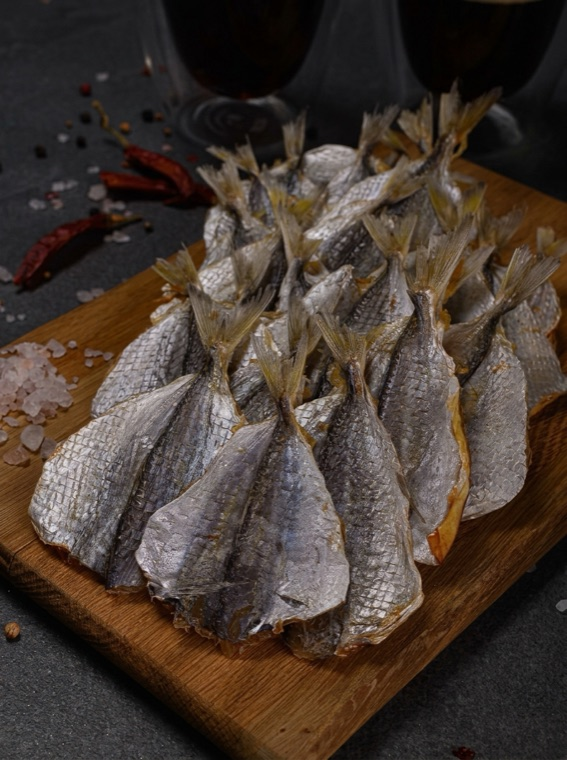

Сушёная солёная рыба и хрустящие рыбки · КИШИНЁВ
Сушёная рыба и сушёные рыбки
Настоящее разливное пиво невозможно представить без хорошей сушёной рыбы! В GYM BEER вы выбираете рыбу на месте — всегда свежую, плотную и правильно просоленную.

Характеристики и вкус
- Происхождение
- Рыбная витрина GYM BEER · Кишинёв
- Стиль
- Сушёная солёная рыба и хрустящие рыбки
- Крепость / Горечь
- Gustare la gramaj · Sărat & Crocant
- Температура подачи
- Vitrina GYM BEER
- Цена ориентир.
- la gramaj
Аромат: Натуральный аппетитный аромат вяленой и сушёной рыбы.
Вкус: Насыщенный солёный вкус, идеально подчёркивающий свежесть светлого пива.
С чем сочетать в GYM BEER: Жигулёвское, HOLZ Munich Helles, Götter Pilsner, Kozel Světlý и Hopfenbräu Pils.
Рыба продаётся поштучно или на вес?
Взвешиваем на вес — можно взять от пары штук до большого набора на компанию.
Как уточнить наличие на сегодня?
Позвоните по телефону +373 69 482 293 или заходите ежедневно с 10:00 до 22:00 на Ботанику или Буюканы.
Похожие позиции в меню: HOLZ Vienna Lager · HOLZ Gold · Groll Royal Pils · Götter Pilsner Нефильтрованное · London Beer